|
|
Ejercicios
- Compruebe que la familia de rectas 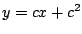 es solución
de la ecuación diferencial
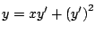. Determine un valor de
 de forma que 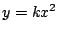 sea
una solución singular de la ecuación diferencial dada. Dibuje
en un mismo sistema de coordenadas la solución singular y
algunas soluciones particulares. de forma que 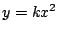 sea
una solución singular de la ecuación diferencial dada. Dibuje
en un mismo sistema de coordenadas la solución singular y
algunas soluciones particulares.
- Compruebe que la familia de rectas
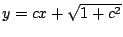 es
solución de la ecuación diferencial
 . Demuestre que el círculo 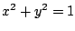 es una solución singular de la ecuación diferencial
dada. Dibuje en un mismo sistema de coordenadas la solución
singular y algunas soluciones particulares. . Demuestre que el círculo 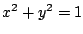 es una solución singular de la ecuación diferencial
dada. Dibuje en un mismo sistema de coordenadas la solución
singular y algunas soluciones particulares.
- Compruebe que la familia de curvas
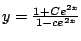 es solución de la ecuación diferencial
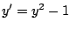. Determine una solución singular para la
ecuación diferencial. Dibuje en un mismo sistema de coordenadas
la solución singular y algunas soluciones particulares.
- Compruebe que si
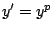, donde 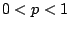 tiene
soluciones tiene soluciones
 e
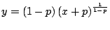. Examine los casos especiales
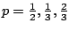. Discuta la relación
entre estas soluciones. Existen otras soluciones además de las
dadas. Discuta los casos 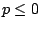 y 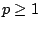. e
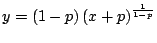. Examine los casos especiales
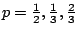. Discuta la relación
entre estas soluciones. Existen otras soluciones además de las
dadas. Discuta los casos 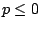 y 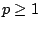.
- Revista virtual
Matemática, Educación e Internet -
ITCR
|